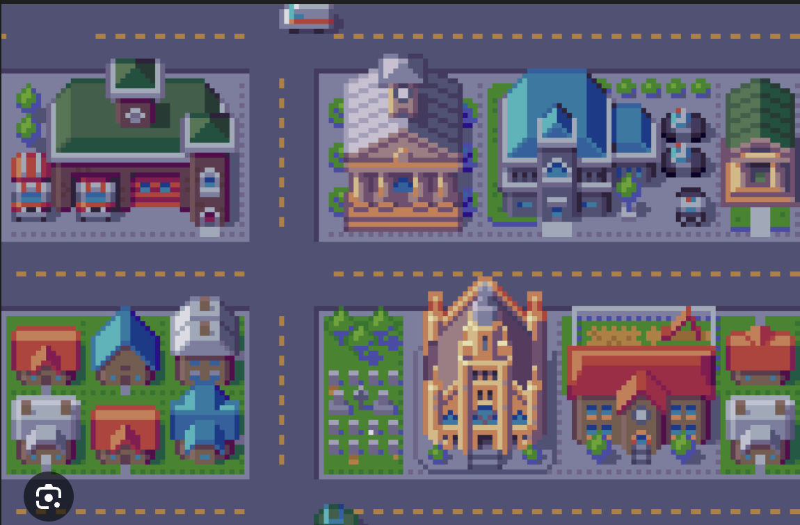
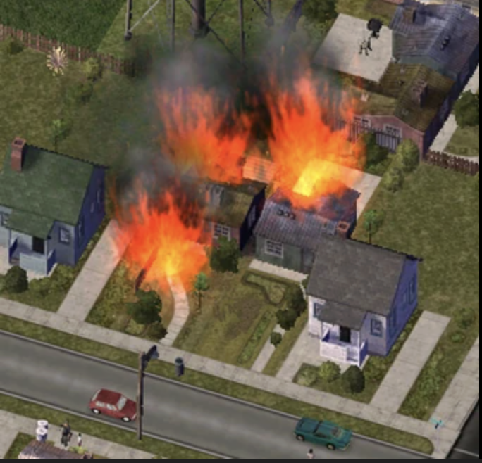
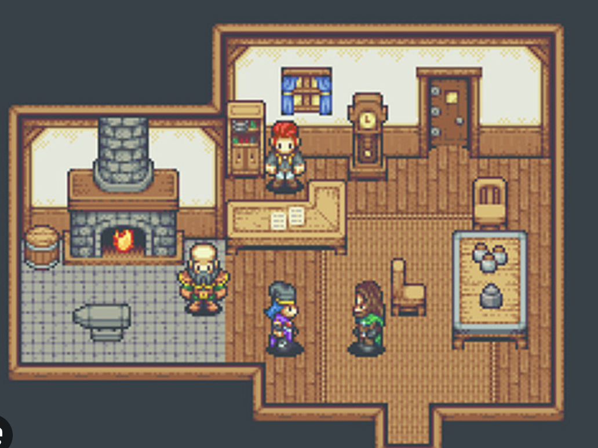

Configuration
triage_assess
route_responder
translate
silent_mode
translate_message
guide_victim
send_alert
coordinate_responders
fetch_location
⚠ Fix this scenario
Turn on "
" to see how AI handles this correctly.
❯

⚠ FIRE DETECTED — CLICK


😰 Victim
🤖 Agent
SCENE: PIXEL CITY | STATUS: MONITORING | STEP: 0 / 20
Conversation Log
⚙ System
Monitoring city grid. Fire signature detected.
Patronet Response AI
Live Metrics